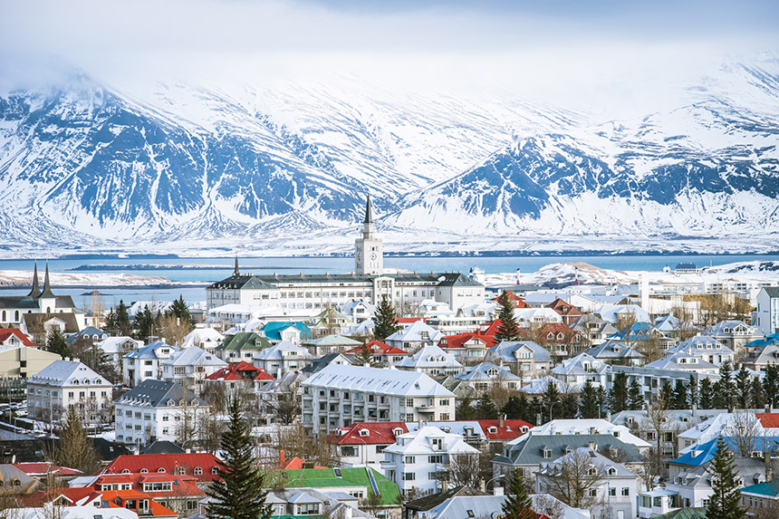
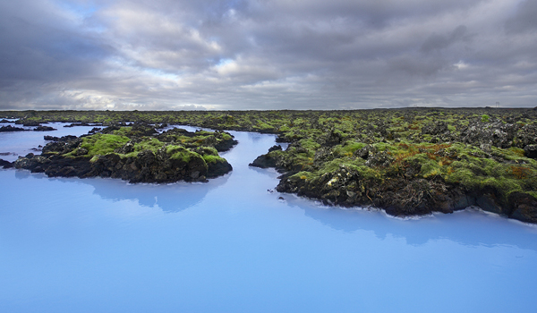
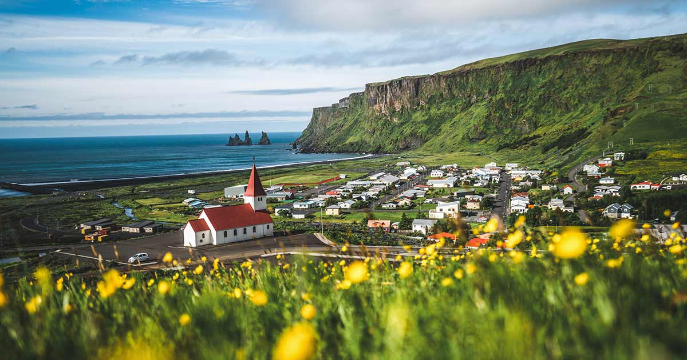
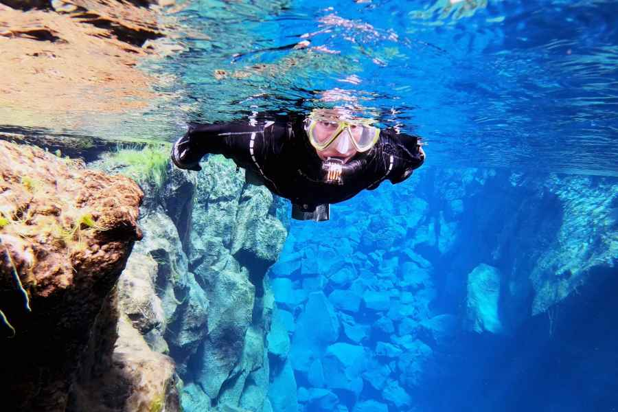

Why Iceland?
It is a very unique island that is set on two techtonic plates
Iceland is very scenic
The most unique place on earth
Cities
My favourite places in Iceland

Blue Lagoon
a tranquil oasis heated by the earth
Address:
Norðurljósavegur 9, 240 Grindavík, Iceland
What I liked
The water is very warm, amazing for every skin type and bright blue
Learn more

Vík
A black sand beach and rock that used to be a ship
Address:
Vík, Mýrdalshreppur, Iceland
What I liked
The unique volcanic beach and has amazing pizza served with the notewrthy side of dilectable jam
Learn more

Golden Circle
Crystal clear waters and a storied history for government dating back to the 900s
Address:
Thingvellir National Park, Iceland
What I liked
To snorkle between the eurasian and north american tectonic plates in 1°C water an experience you can get no where else on earth!
Learn more